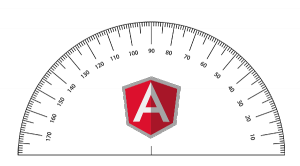

Protractor – e2e тест-фреймворк сделанный на основе WebDriverJS, который приходит на смену первоначальным e2e тестам AngularJS. Запускает тесты в реальном браузере. Может быть запущен как самостоятельный бинарник либо включен в тесты как библиотека.
Установка
Для установки достаточно установить npm-пакет:
$ npm install -g protractor
проверим все ли прошло успешно:
$ protractor --version Version 0.18.1
чтобы установить и запустить Selenium, который будет выполнять тесты для нас делаем:
$ webdriver-manager update
а потом
$ webdriver-manager start
Запуск
Для запуска протрактора делаем:
$ protractor protractor.js
где protractor.js – предварительно созданный нами файл конфигурации.
Для старта можно использовать конфиг из примера:
// An example configuration file.
exports.config = {
// The address of a running selenium server.
seleniumAddress: 'http://localhost:4444/wd/hub',
// Capabilities to be passed to the webdriver instance.
capabilities: {
'browserName': 'chrome'
},
// Spec patterns are relative to the current working directly when
// protractor is called.
specs: ['example_spec.js'],
// Options to be passed to Jasmine-node.
jasmineNodeOpts: {
showColors: true,
defaultTimeoutInterval: 30000
}
};
Единственно что вам нужно изменить это опцию specs(по умолчанию [‘example_spec.js’]). В ней мы укажем путь к файлу(либо группе файлов) тест-сценария. Давайте создадим его также по примеру:
describe('angularjs homepage', function() {
it('should greet the named user', function() {
browser.get('http://www.angularjs.org');
element(by.model('yourName')).sendKeys('Julie');
var greeting = element(by.binding('yourName'));
expect(greeting.getText()).toEqual('Hello Julie!');
});
});
Из описания видно что наш тест:
- зайдет на страницу http://www.angularjs.org
- выберет елемент связанный с моделью yourName и установит значение ‘Julie’
- выберет элемент по связке(bind) с моделью yourName
- проверит что текст приветствия равен ‘Hello Julie!’
Теперь запустим:
$ protractor protractor.js Using the selenium server at http://localhost:4444/wd/hub . Finished in 5.629 seconds 1 test, 1 assertion, 0 failures
Настройка
Все возможный варианты параметров конфигурации описаны в этом примере.
Разберем некоторые
| Опция | Описание | Значение по умолчанию |
|---|---|---|
| seleniumAddress | адрес запущенного селениум сервера (обычно http://localhost:4444/wd/hub) | null |
| allScriptsTimeout | таймаут для выполнения всех сценариев | 11000 |
| specs | пути к файлам сценариев тестов (относительно конфига) | [‘spec/*_spec.js’] |
| exclude | исключения для предыдущего пункта | [] |
| capabilities | выбор браузера с параметрами. Более подробно тут | {‘browserName’: ‘chrome’} |
| multiCapabilities | предыдущая опция для запуска тестов в нескольких браузерах | [] |
| baseUrl | стартовая страница приложения | http://localhost:8000 |
| rootElement | элемент на котором иницилизированно приложение (ng-app) | body |
| onPrepare | колбэк который будет выполнен, когда протрактор готов к работе, но тесты еще не начали выполняться | function() {} |
| params | параметры, которые будут внедрены в среду выполнения тестов (но не сами тесты) | {login: { user: ‘Jane’, password: ‘1234’}}, |
| framework | фреймворк для тестов. возможные варианты: jasmine, cucumber, mocha | jasmine |
| onCleanUp | колбэк, когда тесты завершены | function(){} |
Написание тестов
По умолчанию используется Jasmine фреймворк, но при желании его можно поменять на mocha(инструкции тут ).
Глобальные переменные, которые добавляет протрактор:
- protractor – нэймспэйс-оболочка протрактора, которая содержит статические вспомогательные переменный и классы
- browser – оболочка вебдрайвера, используется для навигации и получение информации о странице
- element – вспомогательная функция для нахождения и взаимодействия с элементами
- by – коллекция стратегий поиска элементов (ccs selector, id, binding attribute)
Основные методы-помошники:
- browser.get(targetUrl) – переход на указанный URL
- element(by.css(‘.error’)) – выбор элемента по css
- element(by.model(‘modelName’)) – выбор элемента по модели
- element(by.binding(‘variableName’)) – выбор элемента по баиндингу (ng-bind или {{variableName}})
- element.all(by.repeater(‘item in items’)); – выбор списка элементов из ngRepeat
- element(by.model(‘modelName’)).getText() – получение текстового значения
- element(by.model(‘modelName’)).getAttribute(‘id’) – получение значение аттрибута
- element(by.model(‘modelName’)).sendKeys(‘Some text’) – задание значения
- element.all(by.repeater(‘item in items’)).count() – получение количества элементов в списке
- element.all(by.repeater(‘item in items’)).get(1) – получение одного элемента из списка
- element.all(by.repeater(‘item in items’)).first() – получение первого элемента из списка
- element.all(by.repeater(‘item in items’)).last() – получение последнего элемента из списка
- element.all(by.repeater(‘item in items’)).row(1).column(‘title’) – получение значение title из 2й строки
- browser.isElementPresent(by.model(‘modelName’)) – проверка наличия элемента
- $(‘.info’) – короткий алиас к element(by.css(‘.info’)) !Внимание: не путать с jQuery.
- $$(‘option’) – короткий алиас к element.all(by.css(‘option’))
Тестирование асинхронных операций
Учитавая что ваше приложение скорее всего подгружает большое количество контента асинхронно, то повозится со спецификой прийдется прилично.
Воздержусь от подробного разбора данного пункта, так как в зависимости от выбранной библиотеки подходы в написании тестов могут отличатся. Единственное что скажу: сразу для себя настроил mocha-фреймворк, с ним намного удобнее работать с асинхронными операциями.
Создание снимков экрана
Вебдрайвер позволяет делать скриншоты с помощью метода browser.takeScreenshot(), который возвращает промис, который в свою очередь вернет PNG снимок экрана в формате base64:
browser.takeScreenshot().then(function (png) {
//...
}
Для записи файла на диск можно написат свою вспомогательную функцию:
var fs = require('fs');
function writeScreenShot(data, filename) {
var stream = fs.createWriteStream(filename);
stream.write(new Buffer(data, 'base64'));
stream.end();
}
и потом ее вызвать:
browser.takeScreenshot().then(function (png) {
writeScreenShot(png, 'test_screen.png');
}
!Внимание: в некоторых случаях необходимо дождаться полной загрузки страницы (или отдельного компонента) чтобы не получить частичный снимой недогруженного контента.
Отладка(debugging) сценариев Protractor
Функциональные(end to end) тесты крайне сложно дебажить, потому что они зависят от системы в целом, также могут зависеть от предыдущих действий (например логин), и могут изменять состояние приложения, которое тестируют. В частности отладку тестов на вебдрайвере(webdriver) усложняют длинные соообщения об ошибках и разделение процессов: на тот, который выполняется в браузере, и тот, который выполняет сам тест сценарий.
Возможные причины остановки:
- вебдрайвер выдает ошибку, когда команда не может быть завершена, например: элемент не найден
- protractor останавливается, когда не может найти AngularJs. Если необходимо проверять так же страницы без AngularJs, тогда используйте вебдрайвер напрямую через browser.driver
Чтобы поставить точку остановки (debug point) необходимо в коде теста вызвать следующий метод:
browser.debugger();
и запустить protractor в режиме отладки(с флагом debug):
$ protractor debug protractor.js
И после чего вы сможете насладиться радостью дебага из консоли
debug> help Commands: run (r), cont (c), next (n), step (s), out (o), backtrace (bt), setBreakpoint (sb), clearBreakpoint (cb), watch, unwatch, watchers, repl, restart, kill, list, scripts, breakOnException, breakpoints, version debug>
Используется node-debugger, только точка остановки задается методом browser.debugger(); вмето debugger;
Интерактивный запуск
Альтернативный способ отладки – интерактивный запуск, когда вы можете сами выполнить команды сценария из консоли и обнаружить ошибку.
Для запуска protractor в режиме консоли необходимо выполнить следующую команду в директории программы:
$ node ./bin/elementexplorer.js
(в зависимости от ОС и типа установки путь к директории программы может отличаться. В моем случае это было /usr/local/lib/node_modules/protractor/)
Теперь можно выполнить что-то типа такого:
> browser.get('http://www.angularjs.org')
или просто
> browser
Дополнительно
Что можно еще интересного почитать в тему:
Приятных вам тестов с Protractor!